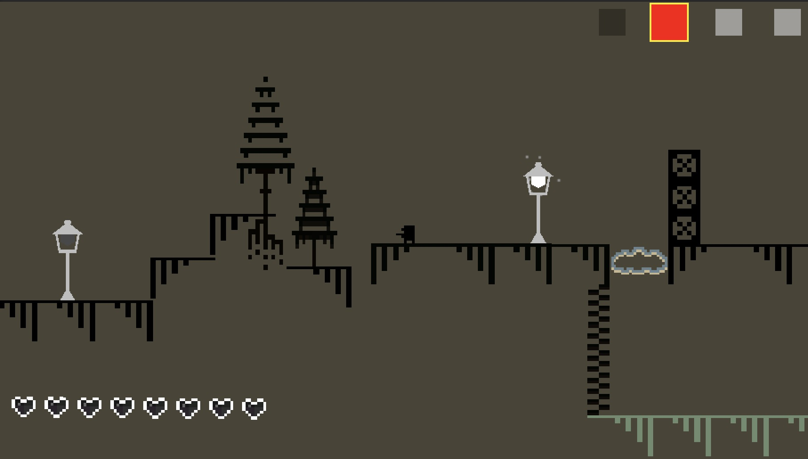
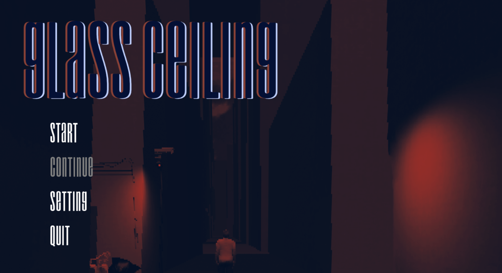
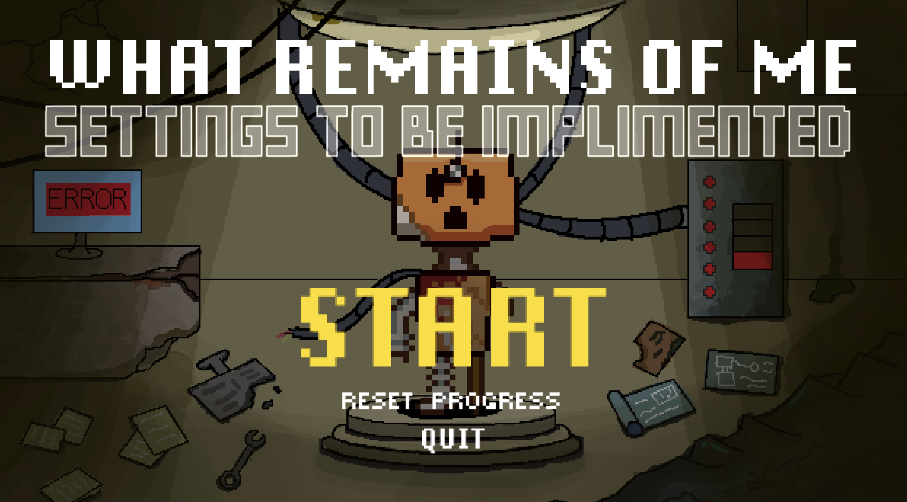

游戏程序员 · 2025年9月 – 至今
使用 Unity 和 C# 开发核心游戏系统，包括基于颜色的交互机制（动态改变物体物理属性与关卡通行方式）、 可复用组件架构（多系统共享核心逻辑同时保持独立行为），以及颜色解锁进度系统（影响世界状态与谜题配置）。 与四人团队通过 GitHub 协作开发。

游戏程序员 · 2025年9月 – 12月
使用 Unity 和 C# 完成核心游戏编程、UI 系统、机制设计与音效集成， 交付了一款完整可玩的恐怖解谜 Demo，经过多轮迭代测试与打磨， 不断优化玩家交互体验与整体可玩性。

游戏开发者 · 2025年9月 – 12月
扩展现有系统以实现更流畅的功能集成，参与游戏编程、美术资产制作与关卡设计。 使用 Jira 追踪开发任务，编写 QA 测试脚本，确保功能正常运行及团队协作顺畅。
联合负责人 · 2022年9月 – 2023年5月
联合带领团队为云南白水河小学开发有声书及线上音乐与英语课程， 扩展农村学生获取数字教育资源的渠道。制作与编辑多媒体教育材料， 与跨职能团队协作规划内容、解决交付难题并保持一致质量。
开发者 · 2025年 – 至今
这个网站本身——一个简洁、响应式、支持中英双语的个人作品集， 使用 HTML、CSS 和原生 JavaScript 构建，以游戏开发者视觉风格为设计理念， 托管于 GitHub Pages。